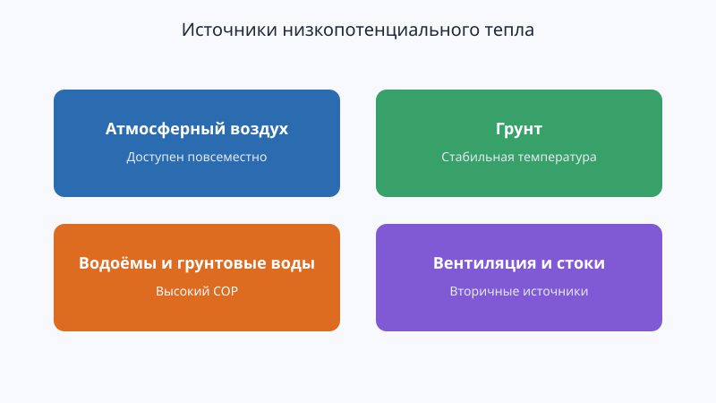
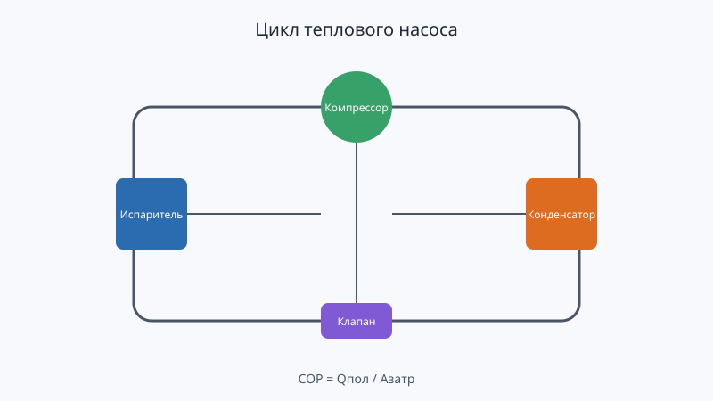
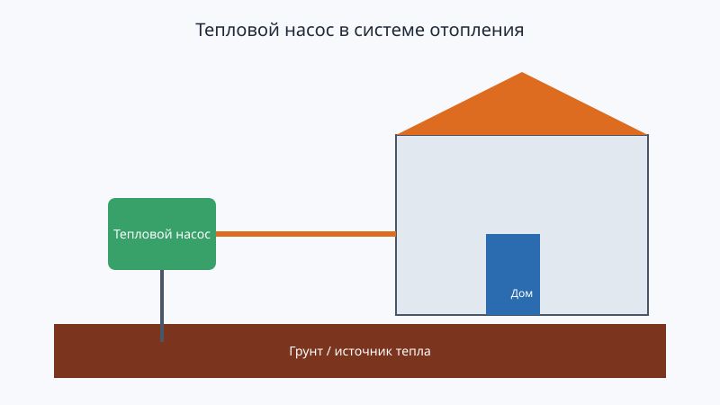

Глава 6. Низкопотенциальное тепло окружающей среды
6.1 Понятие низкопотенциального тепла
Низкопотенциальное тепло — это тепло с температурой, близкой к температуре окружающей среды (обычно от 0 до 30 °C). Оно рассеяно в воздухе, воде и грунте и не может быть напрямую использовано для отопления без повышения температуры.
Несмотря на низкую температуру, запасы такого тепла огромны. Для его использования применяются тепловые насосы — устройства, переносящие теплоту от источника с низкой температурой к потребителю с более высокой температурой, затрачивая меньше энергии, чем выдаёт.
Низкопотенциальное тепло относится к возобновляемым источникам энергии (ВИЭ), поскольку оно постоянно восполняется за счёт солнечного излучения и тепла Земли.

Ключевой характеристикой теплового насоса является коэффициент преобразования (COP) — отношение полученного тепла к затраченной энергии. Современные тепловые насосы имеют COP 3–5, то есть на 1 кВт·ч электроэнергии вырабатывают 3–5 кВт·ч тепла.
6.2 Тепловые насосы
Тепловой насос работает по обратному циклу Карно: он забирает тепло от источника с низкой температурой и передаёт его потребителю с более высокой температурой. Основные типы тепловых насосов: воздушные, грунтовые (геотермальные) и водяные.
Воздушные тепловые насосы используют тепло наружного воздуха, грунтовые — тепло грунта (через вертикальные или горизонтальные зонды), водяные — тепло водоёмов и грунтовых вод. Грунтовые и водяные насосы более стабильны по температуре источника и обеспечивают более высокий COP.

Эффективность теплового насоса зависит от разности температур между источником и потребителем: чем меньше эта разность, тем выше COP. Поэтому тепловые насосы особенно эффективны в системах «низкотемпературного» отопления (тёплый пол, фанкойлы).
6.3 Источники низкопотенциального тепла и области применения
Основные источники низкопотенциального тепла:
- Атмосферный воздух — доступен повсеместно, но имеет наибольшую сезонную и суточную изменчивость.
- Грунт — стабильная температура на глубине, требует бурения или укладки зондов.
- Водоёмы и грунтовые воды — стабильная температура, высокий COP, но требуют близости к источнику.
- Вентиляционные выбросы и сточные воды — вторичные источники, часто используются в городских условиях.
Тепловые насосы применяются для отопления, горячего водоснабжения, кондиционирования и в промышленных процессах. Наибольший эффект достигается при комплексном использовании — например, сочетании теплового насоса с солнечными коллекторами или геотермальными скважинами.

Проверка знаний
-
Что такое низкопотенциальное тепло?
Тепло с температурой, близкой к температуре окружающей среды (обычно от 0 до 30 °C), рассеянное в воздухе, воде и грунте.
-
Что такое тепловой насос?
Устройство, переносящее теплоту от источника с низкой температурой к потребителю с более высокой температурой, затрачивая меньше энергии, чем выдаёт.
-
Что характеризует коэффициент преобразования (COP) теплового насоса?
Отношение полученного тепла к затраченной энергии. Современные тепловые насосы имеют COP 3–5.
-
Какие типы тепловых насосов существуют?
Воздушные, грунтовые (геотермальные) и водяные.
-
От чего зависит эффективность теплового насоса?
От разности температур между источником и потребителем: чем меньше разность, тем выше COP.
-
Назовите основные источники низкопотенциального тепла.
Атмосферный воздух, грунт, водоёмы и грунтовые воды, вентиляционные выбросы и сточные воды.